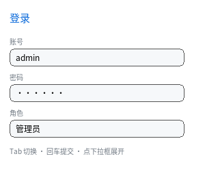

输入控件
到这一章为止，界面里所有文字都是编译期定好的静态数据 —— 这一章讲唯一两个
例外：<input> 与 <select>。

完整程序：example/10_input.c
<input>：单行输入
<input value="admin"> <!-- 初始值 -->
<input type="password" value="123456"> <!-- 显示成圆点 -->
QLUINodeRT *user = /* 找到那个节点 */;
printf("%s\n", ql_ui_input_value(ui, user)); /* 读值 */
ql_ui_input_set_value(ui, user, "张三"); /* 写值（光标移到末尾） */
能做什么：
| 操作 | 触发方式 |
|---|---|
| 定位光标 | 点击 |
| 选一段 | 按下后拖动（多行框按 (x, y) 定位，拖出框外会自动滚） |
| 插入字符 | QL_INPUT_TEXT（平台层把字符翻译成 UTF-8 后送进来） |
| 删一个字符 | Backspace / Delete（有选区时删选区） |
| 移动光标 | ← → Home End |
| 扩展选区 | Shift + 上面四个 |
| 收焦点 | Esc |
| 通知值变化 / 回车 | ql_ui_set_input_cb(ui, cb, user) |
空框也有光标：光标和选区不是"文字"，是输入框的装饰，所以空值聚焦 照样画竖线（否则清空内容后就看不见焦点在哪）。
末尾的空格是真的空格：普通文本的行尾空格会被裁掉（那是排版需要）， 输入框不会 —— 在末尾敲空格，值里多一个空格、光标也往右挪一格。
值和输入框是同一份数据：node->text 直接指向池里的可变缓冲，所以绘制、
text-align、横向滚动这些全都不用改 —— 它们读到的就是最新值。
值放在哪：一条按需分配的池
界面里没有 <input> → inputs == NULL （零字节）
界面里有 3 个 → 3 × QL_CFG_UI_INPUT_LEN 字节
上限都是 config 里的常量（默认 8 个 × 96 字节）。超长插入静默截断：
用户打字不该因为"满了"而失败，但 ql_ui_input_set_value() 也照样夹紧。
密码框：宽度按圆点算
显示文本 = 每个码点一个 '•'
绘制时临时换成圆点串再走原来的文本管线，因此测宽必须按圆点量 —— 否则 12 个汉字的真实宽度和 12 个圆点的宽度差一大截，光标会飘到框外去。
没有的东西（都是有意留白）
| 缺 | 原因 / 替代 |
|---|---|
| 剪贴板 | 平台层不提供；等 QL_INPUT_CLIPBOARD 这类事件 |
| 输入法（IME） | 平台层负责把上屏文本变成一个 QL_INPUT_TEXT；本库不猜候选框 |
| 光标闪烁 | 闪烁要求主循环一直醒着，省电优先 |
placeholder disabled maxlength |
属性不影响渲染，静默忽略（见与 Web 的差别） |
| 多行 | <textarea> 还没做 |
<select>：覆盖式下拉面板
<select>
<option>管理员</option>
<option>编辑</option>
<option>访客</option>
</select>
int i = ql_ui_select_index(ui, sel); /* 当前第几项 */
ql_ui_select_set_index(ui, sel, 2); /* 设置（越界夹紧） */
ql_ui_set_select_cb(ui, cb, user); /* 用户改了选中项 */
三件事值得说：
<option>自动display: none。它只活在面板里，不进布局 —— 所以不要给 它写尺寸，也不要指望它占位置。- 面板是覆盖层。它不占布局、不受父级
overflow裁剪、画在最后一层 （ql_ui_render末尾单独画一次）。这和浏览器的 popup 一致。 - 同一时刻只开一个。
ui->open_select只存一个指针。
行为：
| 输入 | 行为 |
|---|---|
| 点下拉框 | 展开；再点一次收起 |
| 点面板某一项 | 选中并收起 |
| 点面板外 | 只收起，不改选中 |
焦点在下拉框上时 ↑ ↓ |
改选中项（到头停住，不绕回） |
焦点在下拉框上时 空格 / 回车 |
展开 / 收起 |
Tab 键：焦点在控件之间循环
input → select → button → input → …
按树序找下一个 input / select / button（display: none 的跳过），
到头上绕回。Shift+Tab 反向。
ql_ui_set_focus_node(ui, node); /* 也可以程序设焦点 */
QLUINodeRT *f = ql_ui_focus_node(ui);
焦点连带的还有 :focus 伪类 —— 输入框常见的做法是 input:focus { ... }。
和滚动配合
输入框比盒子宽时自己横向滚（scroll_x，不影响布局），下拉面板可以被
关在滚动容器里面画到外面来。这两点都不需要额外代码：前者是绘制期的处理，
后者是覆盖层的自然结果。
上一章：与 Web 的差别